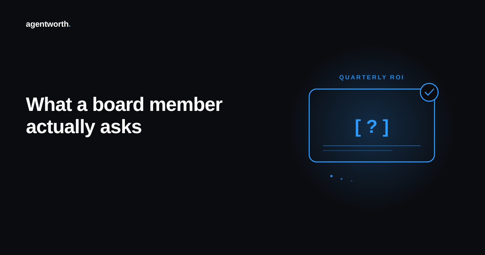

What a board member actually asks about your AI agent's ROI number

The slide usually says something like "AI agent saved us $240,000 this quarter." Nobody on the board argues with that sentence out loud. What they do instead is ask a short, narrow question underneath it, and the answer to that question is what actually decides whether the number survives the meeting.
Teams spend their prep time polishing the headline figure. The board rarely cares about the headline figure. They care about four smaller questions, and most teams have only rehearsed an answer to one of them.
How did you calculate this
Not "walk me through your methodology." Just: what's the formula. A board member who has sat through enough of these presentations knows that two teams measuring the same AI agent can report two different savings numbers, and the gap between them is almost always a quiet choice about what counts as a resolution, what counts as a cost, and what gets left out of both sides of the equation. If you can't state your formula in one sentence, the number reads as a feeling dressed up as a figure, however accurate it actually is.
What would this look like without the agent
This is the counterfactual question, and it's the one most teams answer worst. Pointing at a ticket volume chart that dropped after launch isn't an answer, because plenty of things can drop a ticket volume chart at the same time an agent goes live. A seasonal dip, a product fix that removed a common complaint, a pricing change that shrank the customer base asking questions at all. A board member who has seen a few of these slides knows to ask what else changed that quarter, and a team that hasn't ruled those things out is presenting correlation with better formatting.
Who checked this
This is the question that catches teams off guard, because most ROI numbers are produced and reported by the same team, with no outside check in between. That isn't fraud, it's just how the reporting usually gets built, and a board member asking "who verified this" isn't accusing anyone of lying. They're asking whether the number would survive contact with someone who didn't build it. A savings figure that only one team has ever looked at is a claim. A savings figure with a verifiable log behind it, one finance or an outside reviewer could trace resolution by resolution, is closer to a fact.
What does this number look like next quarter
A figure measured once, right after launch, and never checked again isn't proof the agent works, it's a snapshot from the best possible week. Usage patterns shift, edge cases pile up, and the easy tickets the agent handled first get replaced by harder ones as the queue changes shape. A board that has watched a few technology rollouts knows this, which is why the sharpest version of this question isn't about the number on the slide at all. It's whether the number gets measured the same way again next quarter, and whether anyone would notice if it quietly got worse.
Preparing for the number, not the slide
None of these four questions require a better looking chart. They require a number built so that the formula, the counterfactual, the verification, and the trend are all already sitting behind it before anyone asks. Most teams build the slide first and scramble for the backup when a question lands. The teams who don't get caught build the backup first and let the slide be the summary of work they'd already done.
That's the gap agentworth's audit log is built to close, logging every resolution the agent handled on a record finance or a board member can trace on their own, so the four questions above already have answers before the meeting starts. Try the free ROI calculator to see where your own number sits, or read the full ROI report for more on what a defensible AI agent ROI figure actually requires.